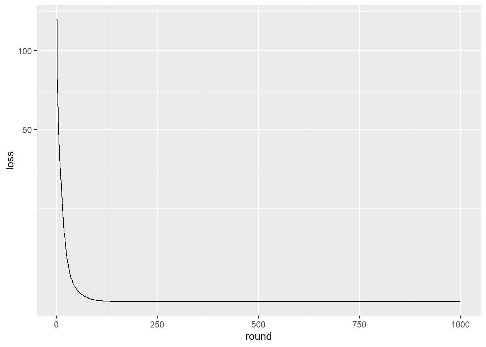
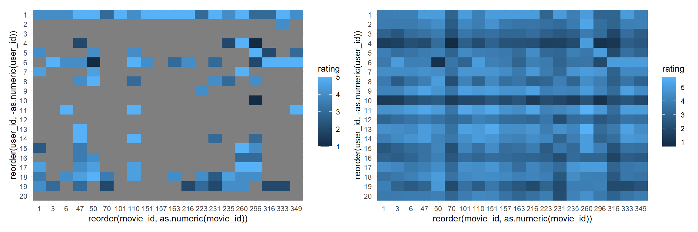

loss function: RMSE + Reg \(\displaystyle \implies L(P, Q) = \sum_{(u, m) \in \text{Train}} \left(R_{um} - P_u \cdot Q^T_m \right)^2 + \lambda \sum_u||P_u||^2 + \lambda \sum_m ||Q_m||^2\)
\(\displaystyle \frac {\partial}{\partial P_u}L = \sum_{m} 2(P_uQ_m^T - R_{um})Q_m + 2\lambda P_u\), \(\quad \displaystyle \frac {\partial}{\partial Q_m}L = \sum_{u} 2(P_uQ_m^T - R_{um})P_u + 2\lambda Q_m\)
\(P_u = P_u - \alpha \frac {\partial L}{\partial P_u}\), \(\quad Q_m = Q_m - \alpha \frac {\partial L}{\partial Q_m}\)
library(tidyverse)
library(patchwork)data_path = "./data/small/ratings.csv"
rating_tidy = read_csv(data_path, col_types = "ccnc") %>%
janitor::clean_names() %>%
select(-timestamp) %>%
mutate(rating = as.double(rating))
rating_matrix = rating_tidy %>%
pivot_wider(names_from = movie_id, values_from = rating, values_fill = 0.0) %>%
column_to_rownames("user_id") %>%
as.matrix()
users = rownames(rating_matrix)[1:20]
movies = colnames(rating_matrix)[1:20]
rating_matrix = rating_matrix[users, movies]funk_svd = function(R, K, max_iter, alpha, lambda){
M = nrow(R)
N = ncol(R)
set.seed(7)
P = matrix(runif(M*K), nrow = M)
Q = matrix(runif(N*K), nrow = N) %>% t()
loss_record = list()
for (step in 1:max_iter) {
for (u in 1:M) {
for (m in 1:N) {
if (R[u, m] > 0) {
e_um = P[u, ] %*% as.matrix(Q[, m]) - R[u, m]
for (k in 1:K) {
P[u, k] = P[u, k] - alpha * (2 * e_um * Q[k, m] + 2 * lambda * P[u, k])
Q[k, m] = Q[k, m] - alpha * (2 * e_um * P[u, k] + 2 * lambda * Q[k, m])
}
}
}
}
R_pred = P %*% Q
loss = 0
for (u in 1:M) {
for (m in 1:N) {
if (R[u, m] > 0) {
loss = loss + (R_pred[u, m] - R[u, m]) ** 2
for (k in 1:K) {
loss = loss + lambda * (P[u, k]**2 + Q[k, m]**2)
}
}
}
}
loss_record[step] = round(loss, 2)
}
return(list(P, t(Q), loss_record))
}K = 10
max_iter = 1000
alpha = 0.01
lambda = 0.0004
res = funk_svd(rating_matrix, K, max_iter, alpha, lambda)
P = res[[1]]
Q = res[[2]]
loss_record = res[[3]]
loss_vec = loss_record %>% as.vector()
loss_path = tibble(
loss = as.numeric(loss_vec),
round = as.numeric(1:length(loss_vec)))
loss_path %>%
ggplot(aes(y = loss, x = round)) +
geom_line(group = 1) +
scale_y_sqrt()
R_pred =
P %*% as.matrix(t(Q)) %>%
tibble::as_tibble()## Warning: The `x` argument of `as_tibble.matrix()` must have unique column names if `.name_repair` is omitted as of tibble 2.0.0.
## Using compatibility `.name_repair`.colnames(R_pred) = colnames(rating_matrix)
R_pred_tidy =
R_pred %>%
mutate(user_id = rownames(rating_matrix)) %>%
pivot_longer(movies, names_to = "movie_id", values_to = "rating")## Note: Using an external vector in selections is ambiguous.
## i Use `all_of(movies)` instead of `movies` to silence this message.
## i See <https://tidyselect.r-lib.org/reference/faq-external-vector.html>.
## This message is displayed once per session.pred_score =
R_pred_tidy %>%
ggplot(aes(x = reorder(movie_id, as.numeric(movie_id)), y = reorder(user_id, -as.numeric(user_id)), fill = rating)) +
geom_tile() +
theme_minimal()
plot_df =
rating_matrix %>%
tibble::as_tibble() %>%
rownames_to_column("user_id") %>%
pivot_longer(movies, names_to = "movie_id", values_to = "rating") %>%
mutate(user_id = as.integer(user_id))
plot_df[plot_df == 0] = NA
original_score =
plot_df %>%
ggplot(aes(x = reorder(movie_id, as.numeric(movie_id)), y = reorder(user_id, -as.numeric(user_id)), fill = rating)) +
geom_tile() +
theme_minimal()
original_score + pred_score